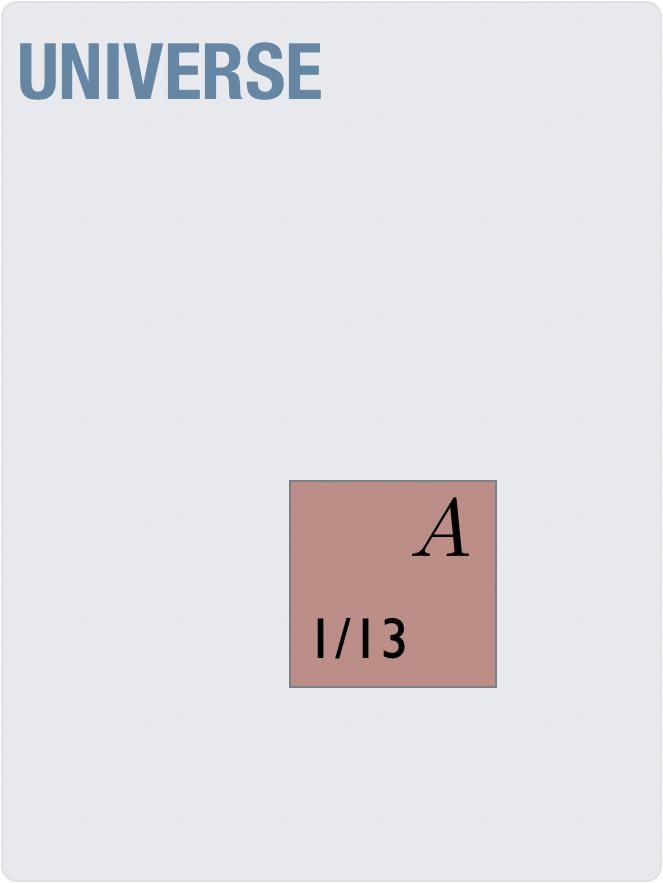
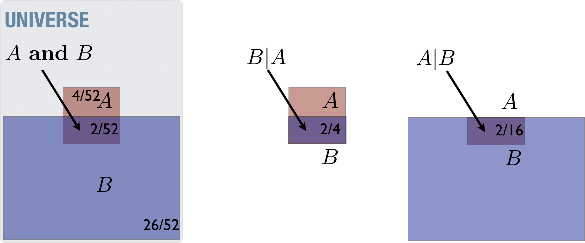
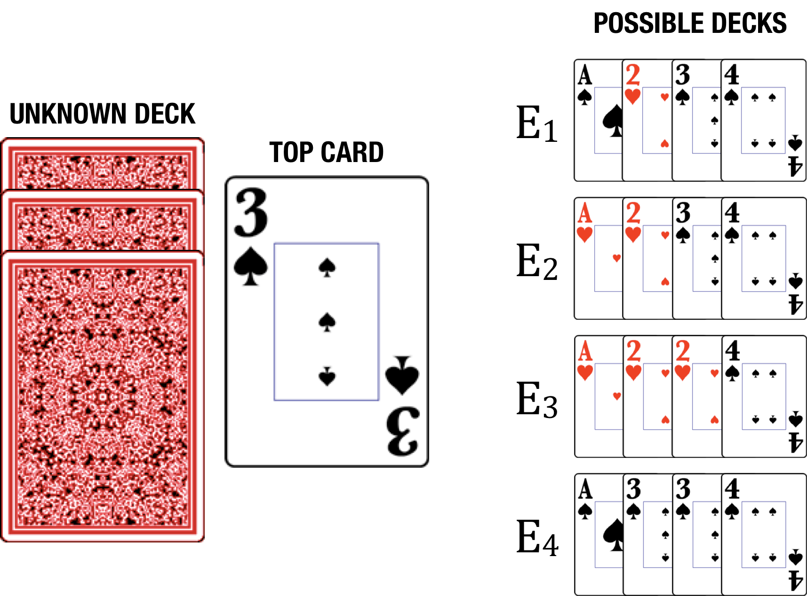
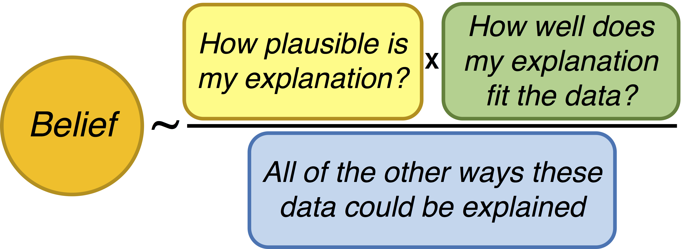

Probability is not just about the math
When we speak about probability, we speak about a percentage chance (0%-100%) for something to happen, although we often write the percentage as a decimal number, between 0 and 1. If the probability of an event is 0 then it is the same as saying that you are certain that the event will never happen. If the probability is 1 then you are certain that it will happen. Life is full of uncertainty, so we assign a number somewhere between 0 and 1 to describe our state of knowledge of the certainty of an event. The probability that you will get struck by lightning sometime in your life is \(p=0.0002\), or 1 out of 5000. Statistical inference is simply the inference in the presence of uncertainty. We try to make the best decisions we can, given incomplete information.
Pierre-Simon Laplace, who first formalized the mathematics of probability, spoke of an agent with perfect knowledge. This agent, Laplace claimed, would not need probability at all.
We may regard the present state of the universe as the effect of its past and the cause of its future. An intellect which at a certain moment would know all forces that set nature in motion, and all positions of all items of which nature is composed, if this intellect were also vast enough to submit these data to analysis, it would embrace in a single formula the movements of the greatest bodies of the universe and those of the tiniest atom; for such an intellect nothing would be uncertain and the future just like the past would be present before its eyes. [@laplace1825philosophical]
E.T. Jaynes describes it in much the same way. He says that we label something “random” due to our ignorance of the system not to any intrinsic randomness. He calls this labeling the mind-projection fallacy [@Jaynes2003], where you misattribute the unpredictable behavior of a system as a product of the system itself. A rolled die is following the laws of physics, deterministically, and detailed knowledge of the die, the roll, and the surface should allow you to predict 100% of the time what it will do. We lack that knowledge, thus the behavior becomes unpredictable. We often then attribute that unpredictable behavior as a “random die”, as if it were the die that contains the randomness and not our own state of knowledge.
E.T. Jaynes goes further and lists a number of features any system used to make plausible inference must have[@Jaynes2003]. These include
- We must be consistent with the laws of logic[@sep-aristotle-logic].
- If a conclusion can be reasoned out in more than one way then every possible way must yield the same result. In other words, we need to be internally consistent.
- We must take into account all of the information provided that is relevant to the question. We can’t arbitrarily ignore some of the information, basing our conclusions only on what remains. In other words, we must be non-ideological.
- Equivalent states of knowledge must be represented by equivalent plausibility assignments. This is another form of internal consistency.
Jaynes demonstrates that the only way to satisfy these conditions is to follow the structure of probability theory, and that any process that does not follow this structure violates one of the conditions above.
The basic rules of probability
For a complete description of the rules of probability, and their application in general statistical inference there are several books available, one of which from the present author [@Blais:2014aa]. We will need to establish a basic set of notation and mathematics in order to address the concepts. This notation will in some cases make clear and condensed much longer expositions of the same concepts in English (due to the terseness of mathematics). In other cases, it will provide a systematic framework for exploring disparate problems, in order to see the connection to all rational thought. We begin by describing the rules of probability, and some of their consequences.
When we write \(P(A)\) the “\(P\)” stands for “probability” and “\(A\)” is some proposition or claim. We will be in the habit of naming sentences or statements with a short-hand of a single letter, like \(A \equiv\) “I draw an Ace from a well-shuffled, typical 52-card deck of cards”1.
We then can talk about the probability of this statement being true with \(P(A)\), which is a summary of “the probability that if I draw a card from a well-shuffled, typical 52-card deck of cards that I will draw an Ace.” The shorthand allows us to write some general statements in a small amount of space.
Instead of using real-life examples to start, I prefer to use examples from simple card games. Using playing cards has several distinct advantages:
- most people are comfortable with the concept of uncertainty in card games
- a deck of cards is a small system
- the probabilities are a direct parallel with fractions of card counts, making the subject more intuitive
- a deck of cards is amenable to pictures
Rule 1 (Definition rule):
The probability of a proposition or statement, e.g. \(P(A)\), is a number between 0 and 1, representing the strength of belief in a statement, \(A\).
\[
\begin{aligned}
P(A)=&0 \,\text{certainly false}\\
P(A)=&1 \,\text{certainly true}\\
0 < P(A) < & 1 \,\text{degrees of belief}
\end{aligned}
\]
The following picture shows a way to visualize this, with a “Universe” of all possibilities and the subset, which is our particular statement as a fraction of the total.

Although this probability is estimated by the fraction of Aces in a deck of cards, whenever we write probabilities we are referring to a measure of the strength of one’s belief in the statement. Thus, when we write that \(P(A)= 4/52 = 0.077\) this probability means that you believe it to be unlikely – but not extremely unlikely – that you draw an Ace from a well-shuffled deck (see the Rough guide for the conversion of qualitative labels to probability values in Table 1 at the end of the chapter). This belief, as we will see, is not just a guess but is something arrived at through proper rational processes, or in other words, by adhering strictly to the rules of probability.
A bit more about the deck-of-cards analogy
We are using the deck of cards to be analogous to the real world. While there are things we know about the real world there is a lot of uncertainty as well, just like the uncertainty of the deck of cards. We can gather evidence in the real world, to better know what the truth is, and analogously we can draw cards from the deck to better know what the properties of the deck is, i.e. if it is well-shuffled, is a standard 52-card deck or a deck of Tarot cards, etc… As in the real world, we can propose models or simplified descriptions of what we think the deck is, and we can perform tests of these models by drawing from the deck and comparing to what we expect from the models. The methods of science do this with nature itself, by arranging situations where the observations will possibly rule out some models in favor of others, so that we get closer to the truth. The same rules of probability apply in all of these cases, but given the intuitive nature of a deck of cards, it is easier to see them applied in this simple system.
Rule 2 (Negation rule):
The negation rule states that a proposition is either true or its negation (i.e. direct opposite) is true. \[ P(A) + P({\rm\bf not}\, A) = 1 \]
The following picture shows a universe of all possibilities and the subset (\(A\)) which is our particular statement as a fraction of the total, along with the opposite of this subset (not \(A\)) which adds up to the total.

In other words, either a statement is true or its negation is true. \[ \begin{aligned} A&\equiv\left[\,\text{"you will draw an Ace from a deck of cards"}\right. \\ P(A)+P(\mathbf{not}\, A)&=1 \\ \frac{1}{13} + \frac{12}{13} &=1 \end{aligned} \] means that you can be certain (i.e. probability equal to 1) that when you draw a card from a deck, it will either be an Ace or it won’t be an Ace. This all seems rather obvious, and you may be wondering why we even bring it up. Surprisingly, this “obvious” property becomes a source of one of the most common logical fallacies - the either-or fallacy.
Notice how this occurs. The following is correct logical inference: \[ \begin{aligned} B&\equiv\left[\text{"a playing card drawn from a deck is black"}\right. \\ P(B)+P(\mathbf{not}\, B)&=1 \end{aligned} \] means that, if you draw a playing card from a deck, you can be certain that it is either black or it is not-black. This is true no matter what kind of deck of cards you are dealing with, even if it contains no black cards! The following, however, is not a correct logical inference: \[ \begin{aligned} B\equiv&\left[\text{"a playing card drawn from a deck is black"}\right. \\ R\equiv&\left[\text{"a playing card drawn from a deck is red"}\right. \\ P(B)+P(R)=&1 \leftarrow \text{this is incorrect} \end{aligned} \] The key point here is that “not-black” is not the same as “red” except in those cases where you can be certain that there are only those two possibilities. One has to be on the lookout for hidden possibilities - perhaps one has a Five Crowns deck[@fivecrowns2023] which has green and yellow cards as well? Failure of imagination can easily lead to accidental either-or logical failures. Statements like “You’re either with us or against us!” (no third option?) and “You could either pursue your dream job or stay where you are and be miserable for the rest of your life.” (again, no other options?) serve as a reminder to recognize this lack of imagination on our part.
Rule 3 (Conjunction rule):
The conjunction rule defines how we handle two propositions being true at the same time, relating them to the probabilities of the individual propositions alone and the probabilities of each one assuming the other is true, also called the conditional probability. The latter probability captures how the two propositions are related. \[ \begin{aligned} P(A \,\mathbf{and}\, B) = P(B|A)P(A) \end{aligned} \]
which is the probability of two statements both being true, A and B. We define a new symbol, \(|\), which should be read as “given.” When there is information given, we call this probability conditional on that information. We can represent the conjunction as the overlap in the following picture:

The numbers in the picture are coming from the propositions \(A\equiv\) “you will draw an Ace from a deck of cards” and \(B\equiv\) “a playing card drawn from a deck is black”
The conditional statements are like restricting the universe to the small part of what you’re “given” (i.e. what’s on the right-hand side of the bar symbol, \(|\)). For example, \(P(A|B)\), is the probability of \(A\) if you restrict your cases to those satisfying \(B\) (see the right-hand rectangle in the following picture) and \(P(B|A)\), is the probability of \(B\) if you restrict your cases to those satisfying \(A\) (see the middle rectangle in the picture):

The conjunction rule in this case means that the probability of you drawing a black Ace is related to the probability of you drawing an Ace from a collection of black cards (i.e. “given that the card is black”, \(P(A|B)\)) and the probability that you will draw a black card at all (\(P(B)\)). It is also equal to the probability of you drawing a black card from a collection of Aces (i.e. “given that the card is an Ace”, \(P(B|A)\)) and the probability that you will draw an Ace at all (\(P(A)\)).
Numerically we have \[ \begin{aligned} P(A) &= \frac{4}{52}& \text{ (probability of Ace out of all cards)}\\ P(B) &= \frac{1}{2}& \text{ (probability of black out of all cards)}\\ P(A|B) &= \frac{2}{26}& \text{ (probability of Ace out of black cards)}\\ P(B|A) &= \frac{2}{4}& \text{ (probability of black out of Ace cards)} \end{aligned} \] From which follows the probability of having a black Ace in two mathematically equivalent ways, \[ \begin{aligned} P(A\,\mathbf{and}\, B) &=P(A|B)P(B) = \frac{2}{26}\times \frac{1}{2} = \frac{1}{26} \end{aligned} \] and \[ \begin{aligned} P(A\,\mathbf{and}\, B) &=P(B|A)P(A) = \frac{2}{4}\times \frac{4}{52} = \frac{1}{26} \end{aligned} \] Mathematically, it can be seen that \(P(A \,\mathbf{and}\, B)\) is always lower than \(P(A)\) unless we are certain that the other statement, \(B\), is true – the conjunction of two things is inherently (and mathematically) less probable than the individual components. Failure to recognize this leads to the conjunction fallacy. The most common example of this fallacy presented is as follows[@wiki_conjunction_fallacy:2023aa],
Linda is 31 years old, single, outspoken, and very bright. She majored in philosophy. As a student, she was deeply concerned with issues of discrimination and social justice, and also participated in anti-nuclear demonstrations.
Which is more probable?
- Linda is a bank teller.
- Linda is a bank teller and is active in the feminist movement.
Most people lead towards (2), but the actual answer is (1) because the combination of two things (a bank teller and is a feminist) is a smaller subset and is thus less likely2.
There are a few points to be made about the approach we’ve been using so far, which become important in later examples.
Notice how concise the description is – the math can summarize the relationship between several concepts with few words or symbols.
As we’ve seen, the conjunction of two things is inherently (and mathematically) less probable than the individual components, sometimes with unintuitive consequences.
If there is more than one way to reason properly to an answer, those different ways must come to the same answer. This is a good check to see that you are thinking properly when you see the same answers, but it is also a way to distinguish two methods that are in fact not equivalent even if they seem to be – they come to different answers.
Two statements are considered independent if knowledge of one gives you no more information about the other. In probabilistic terms, this means that \(P(B|A)=P(B)\) – knowing \(A\) is true doesn’t make the probability of \(B\) any more or less. Flipping a coin a second time is still going to be 50-50 heads-tails whether you flipped heads the first time or not. Drawing a second card from the top of a deck is a little less likely to be a black card if you drew a black card on the first time – knowledge of previous cards drawn tells you information about the probabilities for the second3. Independence becomes important in the evaluation of evidence because it changes how evidence can be accumulated.
- In the case of independent statements, the conjunction rule simplifies to
\[ P(A\,\mathbf{and}\,B) = P(A)\cdot P(B) \,\,\,\text{ (independent)} \]
- The general case of the conjunction rule looks like
\[ \begin{aligned} P(A\,\mathbf{and}\,B\,\mathbf{and}\,C\,\mathbf{and}\,D)=&P(A)\times P(B|A)\times P(C|A\,\mathbf{and}\,B)\times \\ &P(D|A\,\mathbf{and}\,B\,\mathbf{and}\,C) \end{aligned} \]
Rule 4 (Bayes’ rule)
This rule is perhaps the most obtuse to see for the first time, but is by far the most important rule of them all, so it is worth the effort.
\[
\begin{aligned}
P(A|B) =& \frac{P(B|A)P(A)}{P(B)}
\end{aligned}
\] Mathematically, it is just a rewriting of the conjunction rule above. Its deeper meaning can be seen when rewritten in a somewhat more elaborated form describing our belief in an explanation given some data,
\[\begin{aligned} \underbrace{P({\rm explanation}|{\rm data})}_{\rm posterior}&=& \frac{\underbrace{P({\rm data}|{\rm explanation})}_{\rm likelihood}\underbrace{P({\rm explanation})}_{\rm prior}}{\underbrace{P({\rm data})}_{\rm total\,proability}} \end{aligned}\]
where each term is described more fully as
- \(P({\rm explanation})\) – the probability the explanation is correct prior to seeing the data. The term itself is often called the prior, and represents your beliefs before you see the data. Typically, more complex explanations are less likely a-priori than simpler ones. I will use the term model in place of explanation in most of this book, but it means the same thing.
- \(P({\rm explanation}|{\rm data})\) – the probability the explanation is correct after seeing the data (a-posteriori). The term itself is often called the posterior for this reason, and represents your updated beliefs once you have data. Thus, Bayes’ rule is a mathematical expression of learning from evidence.
- \(P({\rm data}|{\rm explanation})\) – the probability that the data can be explained with this particular explanation. The term itself is often called the likelihood, and can be thought of as a measure of how well the explanation fits the data. If the explanation fits the data well, this number will be high, for example. If it fails to explain the data, this number will be low. Although related to our final (posterior) belief, it is not equivalent. An explanation that fits the data well may be very unlikely as our best explanation just because that explanation was extremely unlikely in the first place (i.e. before we saw the data, aka the prior was low). Saying that gremlins cause our car to run may explain the observation of our running but is unlikely becaue the existence of gremlins is unlikely before we make any observations on our car.
- \(P({\rm data})\) – the total probability of the data, regardless of the explanation. It is easiest to understand this term with an examples below. This term doesn’t play major role for us, and is simply there to make sure that the probabilities across all explanations add up to one, mathematically.
Imagine we are playing a game with several small decks of cards, defined here:
- \(E_1: A\spadesuit, 2\heartsuit, 3\spadesuit,4\spadesuit\)
- \(E_2: A\heartsuit, 2\heartsuit, 3\spadesuit, 4\spadesuit\)
- \(E_3: A\heartsuit,2\heartsuit, 2\heartsuit,4\spadesuit\)
- \(E_4: A\spadesuit,3\spadesuit, 3\spadesuit, 4\spadesuit\)
Where \(E\) is denoting a deck or, more generally, an explanation for the data we will collect by drawing cards. In the game, someone has handed us one of the decks (i.e. \(E_1\), \(E_2\), \(E_3\) or \(E_4\)) but we don’t know at all which one it is. The analogy here is that the universe is set up with a set of rules that we are trying to determine. Thus, deciding on which deck we are holding is analogous to deciding which universe we are actually in, given our observations of the universe. In other words, providing an explanation of the data is really about determining which of the many possible universes we are in.

We then draw the top card, observe that it is a \(3\spadesuit\), and see if we can reason about which deck is likely to be the one we are holding. I invited the reader to weight the different explanations, approximately, yourself before we do the math. We choose such a small, simple system because it is easy to intuit the answers without the math. This intuition can provide a scaffold for understanding the mathematics, which can be used in more complex examples where one doesn’t have a strong intuition. It is therefore worth going through at least one example in detail.
To begin, we need to assign the probabilities of the four cases prior to the data. Given total ignorance of which deck was chosen– we know that there are 4 possibilities but have no idea about anything more about the selection process – we assign equal probabilities to the four cases4
\[\begin{aligned} P(E_1)&=&1/4 \\ P(E_2)&=&1/4 \\ P(E_3)&=&1/4 \\ P(E_4)&=&1/4 \end{aligned}\]
Note that in this example we know what cards are in each deck – we know, for example, that there are no spades in \(E_3\) – we just don’t know which deck we were given. Here we describe our intuitions, with the mathematics in parallel below. Since we drew a \(3\spadesuit\), our intuition says that this should rule out \(E_3\) altogether. Further, it says \(E_4\) should be more likely than the other remaining two because it contains the observed card, \(3\spadesuit\), more than one time – it is easier to get that particular card from the fourth deck than the others.
The mathematics would look like this
\[\begin{aligned} P(E_1|3\spadesuit)=&\frac{P(3\spadesuit|E_1)P(E_1)}{P(3\spadesuit)}\begin{array}{c}\ \\\leftarrow\text{this term the same in all}\end{array}\\ P(E_2|3\spadesuit)=&\frac{P(3\spadesuit|E_2)P(E_2)}{P(3\spadesuit)}\\ P(E_3|3\spadesuit)=&\frac{P(3\spadesuit|E_3)P(E_3)}{P(3\spadesuit)}\\ P(E_3|3\spadesuit)=&\frac{P(3\spadesuit|E_4)P(E_4)}{P(3\spadesuit)} \end{aligned}\]
where we already have the priors, one for each model,
\[\begin{aligned} P(E_1)=P(E_2)=P(E_3)=P(E_4)=1/4 \end{aligned}\]
Further, we have the likelihood term,
\[\begin{aligned} P(3\spadesuit|E_1) = 1/4 \end{aligned}\]
because one card out of 4 in the first deck is the \(3\spadesuit\). Likewise, we have the other likelikhood terms for the other models,
\[\begin{aligned} P(3\spadesuit|E_2) &= 1/4\\ P(3\spadesuit|E_3) &= 0 \\ P(3\spadesuit|E_4) &= 2/4 \end{aligned}\]
Finally we have the total probability term,5
\[\begin{aligned} P(3\spadesuit) = 4/16 \end{aligned}\]
because there are four “\(3\spadesuit\)” cards out of all the 16 in the game. Plugging these numbers into the above equations, and performing the arithmetic, we have \[\begin{aligned} P(E_1|3\spadesuit)&=\frac{(1/4)\times (1/4)}{(4/16)} = 1/4 \\ P(E_2|3\spadesuit)&=\frac{(1/4)\times (1/4)}{(4/16)} = 1/4 \\ P(E_3|3\spadesuit)&=\frac{(0)\times (1/4)}{(2/12)} = 0 \\ P(E_4|3\spadesuit)&=\frac{(2/4)\times (1/4)}{(4/16)} = 1/2 \\ \end{aligned}\]
which perfectly matches our intuition – \(E3\) is certainly false, and \(E_4\) is more likely than the other two. Notice further that \(P(3\spadesuit|E_1)\) is another way of saying “how well is the observation of a \(3\spadesuit\) explained by the idea that we’re holding the first deck?” The entire process of starting with prior beliefs (e.g. \(P(E_1)\)) and updating them with an observation (e.g. \(3\spadesuit\)) yielding a posterior belief (e.g. \(P(E_1|3\spadesuit)\)) can then be thought of as updating our initial beliefs with the new evidence.
Any process of reasoning, in any field whatsoever, is either consistent with this process of calculation or it is not rational.
It is for this reason that we explore this process in such detail.
On another front, an alternate way to have calculated the shared bottom term, \(P(3\spadesuit)\), is the following totally long-winded and complicated way
\[\begin{aligned} P(3\spadesuit) =& P(3\spadesuit|E_1)P(E_1) + P(3\spadesuit|E_2)P(E_2)+ \\ &P(3\spadesuit|E_3)P(E_3)+ P(3\spadesuit|E_4)P(E_4)\\ =&(1/4)\times (1/4) + (1/4)\times (1/4) + (0)\times (1/3)+ (2/4)\times (1/4) \\ =& 4/16 \end{aligned}\]
Why would one write it in this seemingly over-complex fashion? Because it makes it easier to say, in words, what this term is doing. It is the sum of all of the probabilities for how well each explanation accounts for the data scaled by how likely that explanation was before seeing the data. In other words, proper rational inference requires that you re-weight the strength of your beliefs in an explanation not just by how well that explanation describes your observations, but also by how intrinsically likely that explanation is before your observations and how well all of the alternatives perform on those same observations.

An observation can be very well described by a particular explanation, but if it can be equivalently explained by other, simpler, explanations, then your belief in that more-complex explanation may in fact become weaker with the new observation (i.e. its probability could go down).
On simplicity
Ockham’s razor, which is the philosophical idea that simpler theories are preferred, is a consequence of Bayes’ rule when comparing models of differing complexity [@Jeffreys1991sharpening]. We can see this by extending the card game example. We extend it two ways – we draw another card, and we add a fifth model. The data now include a draw of a \(3\spadesuit\) followed by a \(4\spadesuit\).
Instead of giving the specific cards in the \(E_5\) deck, we are simply told
\(E_5:\) the deck can be any one of the decks shown:
(\(A\spadesuit, 2\spadesuit, 3\spadesuit, 3\spadesuit\)), (\(A\spadesuit, 3\spadesuit, 3\spadesuit, 4\spadesuit\)),(\(A\spadesuit, 3\spadesuit, 3\spadesuit, 3\spadesuit\)),(\(4\spadesuit, 4\spadesuit, 3\spadesuit, 4\spadesuit\))
This explanation of the game is what is called plastic6 - a value in the model that is not specified ahead of time, but can be fit to the data, and an optimum value found. We could potentially think like the following. Depending on the data, we may infer a different value for the number of \(3\spadesuit\) in this deck. It may be heavily loaded toward \(3\spadesuit\) and \(4\spadesuit\), which would make \(E_{5}\) explain the data very well; however it may have few or none, and not explain the data well or at all. Clearly, once you observe a \(3\spadesuit\), the “best” value for this deck is to have three of them out of the four cards - making it more likely than the previously best explanation, \(E_4\), which only had two out of four. Once we see the second card, the \(4\spadesuit\), the new deck \(E_5\) can explain that as well! In fact, \(E_5\) contains \(E_4\) as a subset, so in some way we might think that \(E_5\) explains the data at least as well – if not better – than \(E_4\), no matter what the data..
However, this process of reasoning violates the laws of probability by not taking our uncertainty into account due to the multiple choices of decks in \(E_5\). For simplicity, let’s just consider the two decks in question, \(E_4\) and \(E_5\), and play the game with them (again, as before, drawing a \(3\spadesuit\) from the top and then drawing a second card, the \(4\spadesuit\)).
- \(E_4\): \(A\heartsuit\),\(3\spadesuit\), \(3\spadesuit\), \(4\spadesuit\)
- \(E_5:\) the deck can be any one of the decks shown:
\([A\spadesuit, 2\spadesuit, 3\spadesuit, 3\spadesuit]\), \([A\spadesuit, 3\spadesuit, 3\spadesuit, 4\spadesuit]\),\([A\spadesuit, 3\spadesuit, 3\spadesuit, 3\spadesuit]\),\([4\spadesuit, 4\spadesuit, 3\spadesuit, 4\spadesuit]\)
We set up the calculation as before,
\[\begin{aligned} P(E_4|3\spadesuit,4\spadesuit)&=&\frac{P(3\spadesuit,4\spadesuit|E_4)P(E_4)}{P(3\spadesuit,4\spadesuit)}\\ P(E_5|3\spadesuit,4\spadesuit)&=&\frac{P(3\spadesuit,4\spadesuit|E_5)P(E_5)}{P(3\spadesuit,4\spadesuit)} \end{aligned}\]
We defer the calculation of the shared term, \(P(3\spadesuit,4\spadesuit)\), and focus on the numerators of both calculations.7 First the one for \(E_4\) (and remember, we have only two decks here, so we’ll have a prior of \(P(E_4)=P(E_5)=1/2\)),
\[\begin{aligned} P(E_4|3\spadesuit,4\spadesuit)&\sim P(3\spadesuit,4\spadesuit|E_4)P(E_4)\\ &=(2/4)\times (1/3) \times (1/2) = 1/12 \end{aligned}\] Where the second draw (the \(4\spadesuit\)) is out of 3 cards, so we have \(1/3\) in the multiply.
Next with the \(E_5\) deck,
\[ \begin{aligned} P(E_5|3\spadesuit,4\spadesuit)&\sim P(3\spadesuit, 4\spadesuit|E_5)P(E_5)\\ &=P(3\spadesuit, 4\spadesuit|E_5)\times (1/2) \\ \end{aligned} \] where the term \(P(3\spadesuit, 4\spadesuit|E_5)\) is arrived at by breaking it into the four possibilities – one for each of the decks. Each of the possibilities (all equally likely, because we are given no other information) has the form of the number of \(3\spadesuit\) divided by 4 times the number of \(4\spadesuit\) divided by 3 (remember – it’s the second card drawn, out of 3 remaining cards) for each deck, times 1/4 because there are 4 total possible decks to consider, for example \[ \begin{aligned} P(3\spadesuit,4\spadesuit|E_5\text{ with } [A\spadesuit, 2\spadesuit, 3\spadesuit, 3\spadesuit])P(E_5\text{ with } [A\spadesuit, 2\spadesuit, 3\spadesuit, 3\spadesuit]|E_5) =& \underbrace{(2/4)}_{\text{two } 3\spadesuit s} \times \underbrace{(0/3)}_{\text{zero } 4\spadesuit s} \times(1/4) \\ P(3\spadesuit,4\spadesuit|E_5\text{ with } [A\spadesuit, 3\spadesuit, 3\spadesuit, 4\spadesuit])P(E_5\text{ with } [A\spadesuit, 3\spadesuit, 3\spadesuit, 4\spadesuit]|E_5) =& \underbrace{(2/4)}_{\text{two } 3\spadesuit s} \times \underbrace{(1/3)}_{\text{one } 4\spadesuit s} \times(1/4) \\ \vdots & \end{aligned} \]
Doing the same for all the possibilities, we get for the \(E_5\) numerator,
\[ \begin{aligned} P(3\spadesuit, 4\spadesuit|E_5)P(E_5)&= \left[(2/4)\times (0/3)\times (1/4) + (2/4)\times (1/3)\times (1/4) + \right. \\ &\left. (3/4)\times (0/3)\times (1/4) + (1/4)\times (3/3)\times (1/4)\right]\times (1/2) \\ &=5/96 \end{aligned} \]
Finally, we can get the shared term,
\[\begin{aligned} P(3\spadesuit, 4\spadesuit)= 1/12 + 5/96 = 13/96 \end{aligned}\]
and the probabilities of each of the decks, given the observation of a \(P(3\spadesuit, 4\spadesuit)\),
\[\begin{aligned} P(E_4|3\spadesuit, 4\spadesuit)&=&\frac{1/12}{13/96} = 8/13\\ P(E_5|3\spadesuit, 4\spadesuit)&=&\frac{5/96}{13/96} = 5/13 \end{aligned}\]
This means that, although \(E_5\) contains the possibility of a better fit to the data, it is less probable because it has a flexible parameter that is unspecified before the data. Even more interesting, is that \(E_5\) actually contains \(E_4\) as a possibility! In other words, if you have an explanation which is not specific but can adjust to the data only after seeing it, there is a danger in accepting that explanation over one that is specific and doesn’t change its prediction after the data. The proper use of the rules of probability help guard against this danger. In religious contexts, an example of this happens when addressing the efficacy of prayer. Someone might reason as follows, “if the prayer works then God chose to act, otherwise God had a reason to withhold action”. This is a poor explanation, because it is not specific and adjusts to the data only after the fact – one couldn’t make a prediction with this model of the world.
We can scale this problem up, to include the following explanation,
- \(E_6\): A collection of every possible 4-card deck drawn from a regular deck of 52 cards, all turned into spades (so there are 4 of every rank).
This new deck is extremely flexible, including a deck \([4\spadesuit, 4\spadesuit, 3\spadesuit, 3\spadesuit]\) which fits the data as precisely as if it could be designed, and any other spades draw we could think of. There are 270725 such decks, and doing the same calculation as above we get that \(E_6\) is less likely than either of the other decks we considered by more than a factor of 100. \(E_6\) is consistent with nearly any data we observe, and in so being, it pays a penalty in our confidence that it is true.
When we prefer a “simpler” model with Ockham’s razor, simpler means fewer adjustable parameters. It also means that the predictions are both specific and not overly plastic. For example, a hypothesis which is consistent with the observed data, but also would be consistent if the data were the opposite would be overly plastic. An example of an infinitely plastic “explanation” is “magic did it.” Because it can “explain” anything (given that it is consistent with any possible observation), it thus explains nothing. Conspiracy theorists suffer from this problem, because any counter-evidence provided get lumped into the conspiracy. If you claim that we staged the moon landing, and someone provides photographs of the astronauts on the moon, then you can just say that the astronaut and the photographer are “in on the conspiracy” – the model gets adjusted after the fact and is overly plastic.
Notice also that simpler does not necessarily mean having fewer parts or having an easier description. For \(E_4\), I had to specify each card, whereas for \(E_6\), I merely said “every possible 4-card deck”. The complexity of the explanation comes from its flexibility. In another context, fitting a line to data you need to specify the slope and the intercept. A model where the slope and intercept are determined from other considerations than the data (and are thus not fit to the data) is more simple than one where we only fit the intercept and have zero slope. The complexity comes from the flexibility a model has once we are presented with data.
On belief, knowledge, and proof
Clearly the terms belief, knowledge, and proof are related but it is the framework of probability that helps us be specific about their differences. We can summarize the situation with the following,
- Belief is measured by probability. Higher probability is equivalent to stronger belief, and likewise, lower probability is equivalent to weaker belief.
- Knowledge is a subset of belief, described more specifically below.
- Proof refers specifically to the result of a deductive process. In this process, one starts with some (given) axioms, and can demonstrate with certainty (i.e. prove) a number of theorems (i.e direct consequences) from those axioms. Thus, the word proof should only be used in situations involving certainty, or in other words, probabilities of exactly 1 or exactly 0 only.
Belief
We say we believe a proposition \(A\) when \(P(A)>0.5\). We say we believe strongly in a proposition \(A\) when \(P(A)>0.95\) or some other, somewhat arbitrary, high number. The strength of a belief is a scale measured by the probability assigned to that proposition.
Everything we have covered so far in this book relates to belief. Notice that someone can have a false belief, if the information they are provided is incorrect. If we want to believe as many true things and as few false things as possible then we should look for ways to test our beliefs and challenge the information we are given. Belief, as used here, is different from opinion. When we use the word opinion we can simply mean preference (e.g. I like vanilla more than chocolate) which is not a belief. However I can also say I have an opinion about whether a political candidate is being honest, which is a usage equivalent to belief as long as the opinion is based on evidence and not just preference. This is yet another example of the vaguaries of the English language.
Knowledge
What is knowledge? Plato gave the following definition of knowledge:
Knowledge is justified true belief. [@fine2003plato]
This is an unsatisfying definition because, it seems, in order to label anything as knowledge with this definition we’d need to be able to independently determine that the statement is true. This presupposes that there is some “outside” knowledge, but we have no access to that. I believe there is likely to be an absolute truth, but that we can never truly know what it is for certain . Howeverm I also believe that this is not such a big problem. It is a red herring to bring up 100% certainty for knowledge, because it is never achievable, and isn’t what we practically call knowledge. I prefer a definition inspired by Stephen J Gould:8
In science, ‘fact’ can only mean confirmed to such a degree that it would be perverse to withhold provisional assent. `I suppose that apples might start to rise tomorrow, but the possibility does not merit equal time in physics classrooms.’ [@gould1981evolution]
Where it says “fact,” read “knowledge.” Where it says “science” read “life.” The fact, or knowledge, that the Sun rises in the east and sets in the west is not due to a formal proof that this is always true, or will continue indefinitely into the future. It is an admission that the probability is so outrageously high, given the evidence of every other sun rise and sun set observed, and the further confirmation of models of the solar system, that it would be “perverse to withhold provisional assent.” We accept the claim as a practical matter, despite not being 100% certain, because of the overwhelming probabilities. This we call knowledge. It is thus never a problem to admit we lack certain knowledge, and it can be seen as an obvious diversion if anyone tries to argue in a manner that suggests it’s a problem.
Mathematically, we might write “knowledge of \(A\)” as the “probability of proposition \(A\) is very close to certain”, or equivalently, \(P(A)>0.9999 \approx 1\) where “\(\approx\)” means approximately. Notice that we don’t need 100% certainty to claim knowledge, and that it is still possible for our “knowledge” to be wrong (although, by definition, it is highly unlikely for this to be the case).
We can ask the question, how did we come to this knowledge? The answer is simply, by applying the rules of probability! According to Bayes’ rule, we update our probabilities given the evidence. This can lead us to approach, but never equal, probability of 1. We can approach, but never achieve, complete certainty of any claim. Rationality only insists that we apply the rules of probability systematically.
Proof
Do proof and evidence mean the same thing? No, they don’t. There are two primary processes for rational inference – deductive and inductive. In deductive reasoning, one starts with some (given) axioms, and can demonstrate with certainty (i.e. prove) a number of theorems (i.e direct consequences) from those axioms. In inductive reasoning, one presents evidence or data which makes certain models either more or less likely – never to absolute certainty. Thus, the word “proof” should only be used in situations involving certainty, derived from axioms with logic. In this way, deductive reasoning is a subset of inductive for those cases where the probabilities are exactly 1 or exactly 0. Induction is just another name for the application of the rules of probability, so we have been doing that from the beginning of the book.
I realize that I’m being pedantic here because in common speech we use the word “proof” a little more loosely. We speak about “scientific proof” or “I won’t believe this without proof”. However, it is important to be specific about what one means here and I will insist through this book that the word “proof” be used only in the more restrictive sense. Everything else is just probabilities approaching proof. As a result, we have the following maxim,
Proof does not exist in science, only in math and philosophy.
The only place you can have proof is where you have axioms (i.e. unprovable statements which are assumed to be true), and can then prove a number of consequences of those axioms. We can prove, for example, that the sum of the angles of a triangle is 180 degrees, if we start with the Euclidean axioms of geometry. Science doesn’t have axioms, and thus there are no proofs - there is only evidence. Unfortunately, we sometimes hear the term “proven scientifically,” even from people who should know better.9
As it applies to science, it has the following consequence
All of the evidence in the universe cannot bring the probability of a scientific claim to certainty.
To see this directly, imagine we have two (and only two) hypotheses for the earth - flat earth and round earth. We can write Bayes’ rule for the probability of each given the data. Note that these data includes things like the experience of airplane flight, Magellan’s trip, pictures from space - all of which could be faked! The flat earth hypothesis is not logically impossible, it’s just been overwhelmed by the evidence.
\[\begin{aligned} P({\rm round}|{\rm data}) &=& \frac{P({\rm data}|{\rm round})P({\rm round})}{P({\rm data}|{\rm flat})P({\rm flat})+P({\rm data}|{\rm round})P({\rm round})}\\\\ P({\rm flat}|{\rm data}) &=& \frac{P({\rm data}|{\rm flat})P({\rm flat})}{P({\rm data}|{\rm flat})P({\rm flat})+P({\rm data}|{\rm round})P({\rm round})} \end{aligned}\]
Notice that, no matter how well the round earth hypothesis explains the data (i.e. \(P({\rm data}|{\rm round})\approx 1\)) and how unlikely you believe it is that the Earth is flat even before the data, (i.e. \(P({\rm flat})\ll 1\)) as long as there is some possible (even if seriously contrived) way to explain the data with the flat earth hypothesis (i.e. \(P({\rm data}|{\rm flat}) \neq 0\)) it is mathematically impossible to make the round earth hypothesis certain. All of the terms in both equations above are greater than 0 and less than 1 and thus the round-earth model isn’t 100% certain (i.e.\(P({\rm round}|{\rm data})< 1\))
This does not mean that we can’t be confident of claims, only that we cannot have absolute certainty of anything in science (and therefore, in life in general). Anyone who doesn’t understand that does not understand science.
For it to be reasonable to believe in something, it must rise to a level of probability that you would label it as belief. Does this ever happen, or should this ever happen, with untrue things? Certainly. Here are a few that come to mind.
- the world is flat - as long as you are constrained to not live near the shore, or see a lunar eclipse
- life is designed - before the advent of Darwin’s theory of natural selection
- the Sun, and the stars, all go around the Earth - until the maturation of astronomy and physics
In each of these cases, at the time there was in fact strong evidence for the (false) claims making it reasonable to believe them. It is no longer reasonable to believe these claims - the process of reason forces one to adjust the probabilities of the hypotheses given new evidence, and to discard those hypotheses that become too improbable.
An example of independence
The nature of independence comes up in many places so it is important to understand how it can affect inference. Recall that two statements are considered independent if knowledge of one gives you no more information about the other. In probabilistic terms, this means that \(P(B|A)=P(B)\) – knowing \(A\) is true doesn’t make the probability of \(B\) any more or less. In the case of cards, if I constantly reshuffle the deck after each draw then knowing one card will not help you with the next.
I can easily make certain cards more or less likely by changing the process of drawing. If I always place cards the I draw from the top of the deck back at the bottom of the deck, then knowing I’ve drawn two Aces so far makes the drawing of Aces less likely in future draws. If however I place the cards back near the top of the deck (e.g. throwing them roughly into a pile that I draw from), then knowing I’ve drawn two Aces so far makes the drawing of Aces more likely in future draws.
If you are assuming (for simplicity) that information you’re getting from two different people is independent and it turns out that it isn’t, then you will not reach proper conclusions. It might be that the information is less reliable than you thought – that the second person only heard the information from the first, so you’re effectively getting it from one person. The equations would look like (focussing on the numerator of Bayes’ Rule) \[ \begin{aligned} P(\text{claim}|A\,\mathbf{and}\, B) &\sim P(A\,\mathbf{and}\, B|\text{claim}) \\ &=P(A|\text{claim})P(B|A,\text{claim}) \end{aligned} \] The key part is \(P(B|A,\text{claim})\) – how likely is the testimony from \(B\) given the testimony from \(A\)? If it is independent, then one gains relevant information from the testimony. If \(B\) is parroting \(A\), then this term is nearly \(1\) and you will effectively only have \(P(A|\text{claim})\). If \(B\) typically avoids agreeing with \(A\), and has heard \(A\) giving the testimony, then the probabilities are shifted in the opposite direction. One can see that it becomes critical to know whether the parts of the process that provided your evidence are all independent.
Scientists design experiments to make sure that the evidence is as informative as it can be – that two measurements of the same thing giving the same answer are doing so not because they correlate but because they independently came to the same answer so we can be confident in it.
Lessons from probability
The mathematics of probability theory is the gold standard for all statistical inference. It structures all inference in a systematic fashion. However, it can be used without doing any calculations, as a guide to qualitative inference. Some of the lessons that are consequences of probability theory are listed here, and will be noted throughout this text in various examples.
- Confidence in a claim should scale with the evidence for that claim - the more evidence the higher confidence.
- Ockham’s razor, which is the philosophical idea that simpler theories are preferred, is a consequence of Bayes’ Rule when comparing models of differing complexity that explain the data equally.
- A complex model must explain the data even better than a simple model to be preferred.
- Simpler means fewer adjustable parameters not fewer parameters or parts.
- Simpler also means that the predictions are both specific and not overly plastic. For example, a hypothesis that is consistent with the observed data, but can also be consistent if the data were the opposite, would be overly plastic.
- Your inference is only as good as the hypotheses (i.e. models) that you consider.
- Extraordinary claims require extraordinary evidence. [@sagandemon]
- It is better to explicitly display your assumptions rather than implicitly hold them.
- It is a good thing to update your beliefs when you receive new information.
- Not all uncertainties are the same.
There is not a universal agreement for the translation of numerical probability values to qualitative terms in English (i.e. highly unlikely, somewhat unlikely, etc…). One rough guide is shown in Table 1. I will be following this convention throughout the book, but realize that the specific probability distinctions are a bit arbitrary.
Table 1
| term | probability |
|---|---|
| virtually impossible | 1/1,000,000 |
| extremely unlikely | 0.01 (i.e. 1/100) |
| very unlikely | 0.05 (i.e. 1/20) |
| unlikely | 0.2 (i.e. 1/5) |
| slightly unlikely | 0.4 (i.e. 2/5) |
| even odds | 0.5 (i.e. 50-50) |
| slightly likely | 0.6 (i.e. 3/5) |
| likely | 0.8 (i.e. 4/5) |
| very likely | 0.95 (i.e. 19/20) |
| extremely likely | 0.99 (i.e. 99/100) |
| virtually certain | 999,999/1,000,000 |
Footnotes
We use the symbol “\(\equiv\)” to denote a definition, not just the equality relationship denoted by the “=”.↩︎
this may be partly due to English being sloppier than math. In choices like the Linda problem, there may be an implied “and is not a feminist” in option (1) in common usage but is not strictly present[@Blais:2014aa].↩︎
It is important to recognize that the relationshop here is not causal but logical. Knowing that you drew a black card on the second card will change the probability you’d assign to drawing a black card on the first, even though they are not causally related.↩︎
not all cases will lead to equal probabilities of the outcomes, because we almost always have some knowledge to go on. See the psychic octopus example in [@Blais:2014aa] for a specific case of this.↩︎
The reader might be thinking at this time, “why do we have to do all this? Seems complicated!” I address this shortly, so please bear with me.↩︎
In mathematical models, this is often referred to as having an adjustable parameter↩︎
Once we have the numerators, we can add them up to get the shared term \(P(3\spadesuit,4\spadesuit)\)↩︎
In this way, knowledge is a subset of belief.↩︎
An example of someone who should know better is Richard Carrier in his “Is Philosophy Stupid” talk., his books, and his articles.↩︎